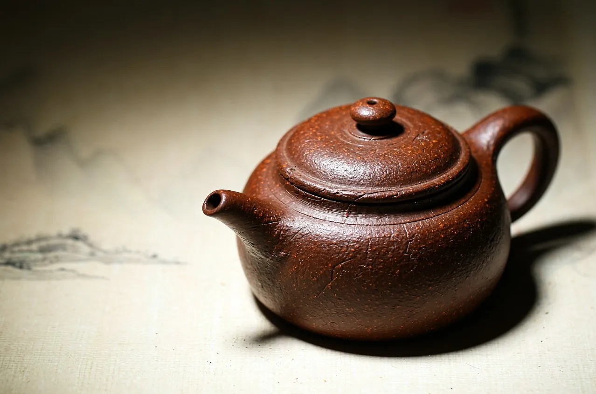
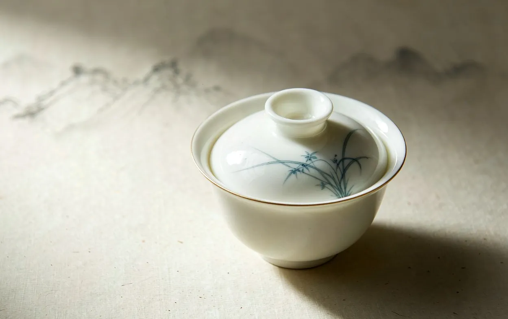
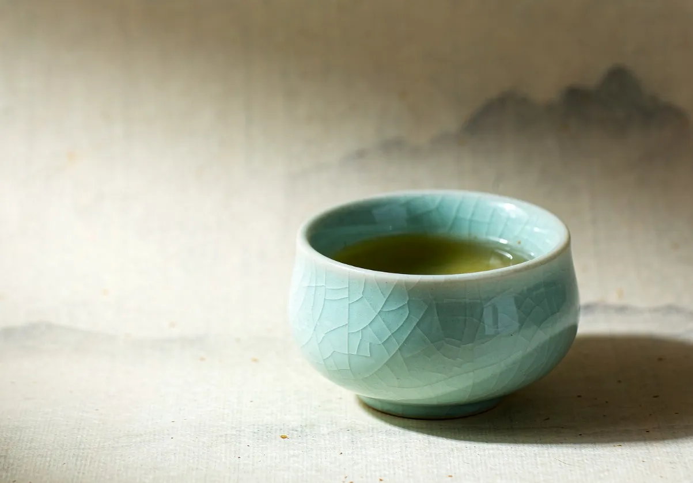
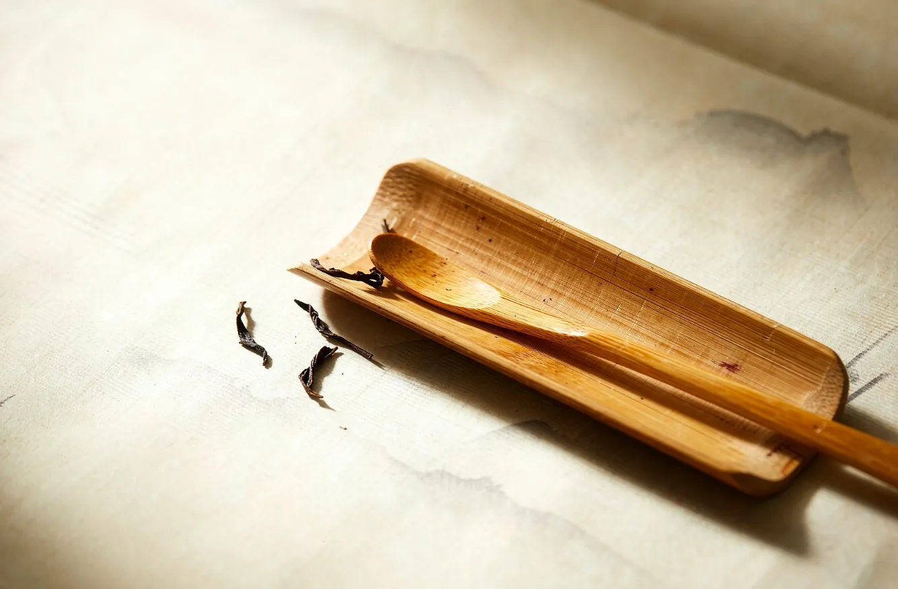

手作茶壶 · Handmade teapots
一次十来把，每一把都以本来面目示人。
看壶 ↓ 关于制壶人 →

手头正在做的这一批，原样呈上。
Ball-Knob Teapot · 棕红砂质

Celadon Crackle Cup · 开片釉

Orchid Gaiwan · 白瓷绘兰
Hammered Iron Kettle · 锤纹铁身，铜提梁

Bamboo Tea Scoop · 竹
更多作品，陆续上传。